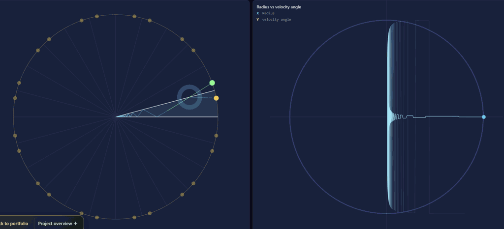
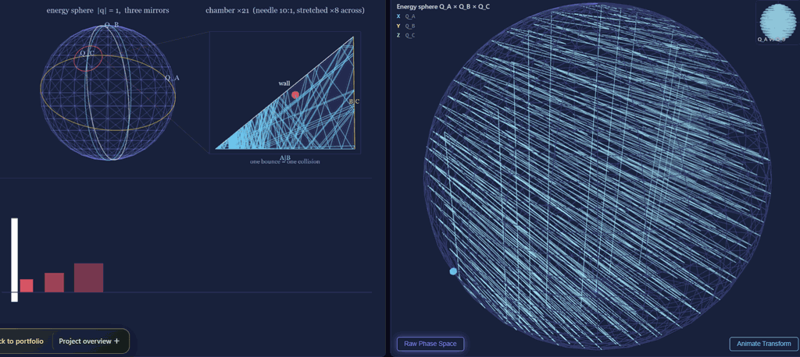
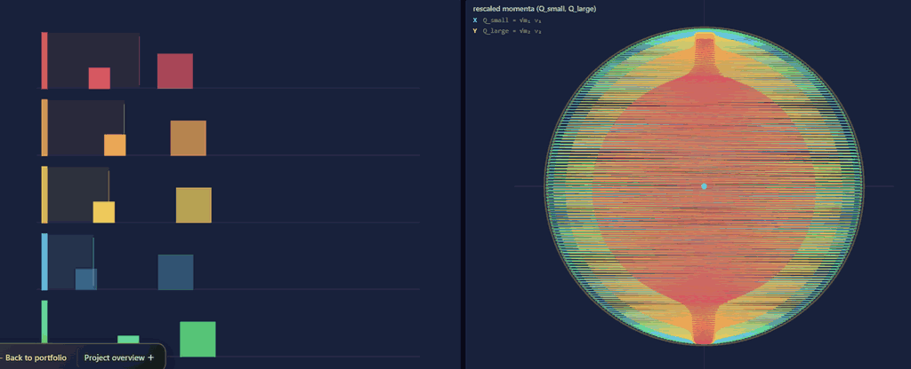
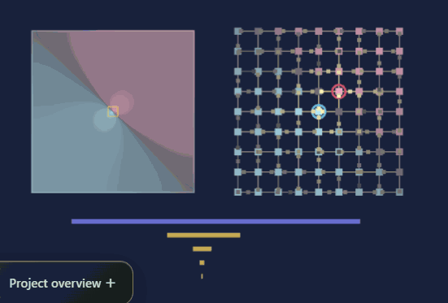

Interactive application
Interactive Video
Overview · selected highlights
Computing π Through Physics
Begin with the two-block collision construction for digits of π, then change the geometry and assumptions that make it work. Phase-space views connect counts to an energy circle, while optical equivalents and deliberately biased variants reveal what is invariant and what breaks.
CollideReflectCount
- π
Count the collisions
Start from the elastic two-block construction and its declared parameters.
- ◯
Reveal phase space
Read the same trajectory through energy geometry and unfolding.
- ↔
Change the representation
Compare mechanical and optical versions of the underlying construction.
- Δ
Break an assumption
Change restitution or support geometry and inspect the resulting bias.
The experiment explains why a counter works—and makes its failure modes just as visible.



